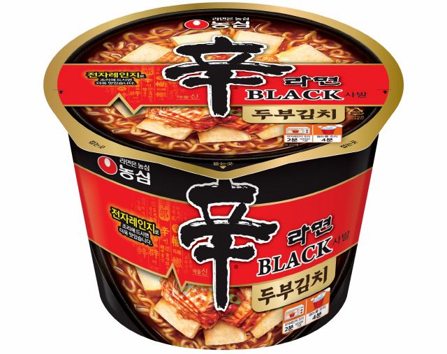

2011년 4월 15일 농심에서 출시한 라면
초기 출시당시 기존 신라면보다 가격이 2.3배되는 고가의 프리미엄
인스턴트 라면이였다.
기존 신라면에 비해 자극적인 맛을 줄이고 우골스프로 구수한맛을 추가하였다
소비자들의 반발로 2011년 9월 생산을 중지하고 2012년 5월 신라면블랙컵으로
재출시하며
2017년 12월 15일 여러 리뉴얼 하고 가격을 줄여 신라면블랙을 재출시 하였다.
그리고 비교적 최근 2020년 11월 두부를 추가한 신라면블랙 두부김치을
출시하기도 하였다.